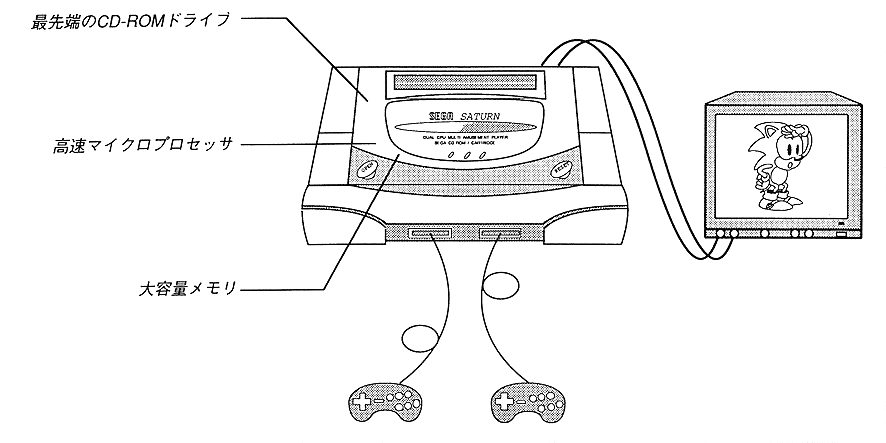

Return to previous page ｜ Return to menu ｜ Go to next page
Chapter 1 Introduction of Saturn

- ● Main CPU is 32-bit RISC chip
- SH-2 equipped with the same computing unit as DSP
- ● Memory
- 32M bits (4M bytes)
CD-ROM 4Mbit (512K bytes)
- ● Powerful graphics function
- Maximum 16,777,216 colors
24 million color pixels / SEC (VDPI)
Sprite processor
that can display polygons
High-performance background processor
- Sound function enhancement
- 32-channel PCM sound source
FM sound source
Return to previous page ｜ Return to menu ｜ Go to next page